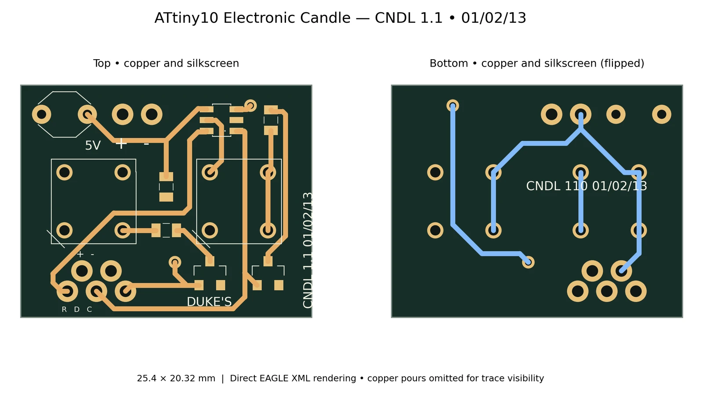

The ATtiny10 Electronic Candle
An exercise in doing more with less
One of my more enjoyable little electronics projects was an electronic candle built around the ATtiny10. With just 1 KB of program memory, 32 bytes of RAM and four I/O pins, the little processor presented an interesting programming challenge. I wanted something that looked more like a flickering candle than a blinking LED, turned itself on when it got dark and conserved its batteries during the day.
Making the Candle
I designed a small printed circuit board using EAGLE and had boards fabricated. The board mounted directly on a three-AA battery pack, which served as the base of the candle. I cut and rolled paper into a hollow tube that slipped down over the battery pack, forming the shade.
Part of the fun was experimenting with different kinds of paper. Different colors, patterns and translucencies produced quite different effects when illuminated from inside. The same electronics could make a variety of candles simply by changing the paper shade.

Making the Light Flicker
Two LEDs are driven by the processor's hardware PWM outputs. Rather than abruptly changing brightness, the software generates a pseudorandom brightness target for one LED and passes its previous target to the other. Both LEDs transition toward their targets in eight steps, taking roughly 120 milliseconds per cycle. The changing light levels blend together through the paper shade.
Daylight Detection and Battery Conservation
To measure ambient light, the software charges a capacitor and then measures how long it takes to discharge through a photocell. This uses a single I/O pin without requiring the analog-to-digital converter. Separate light and dark thresholds provide hysteresis so the candle does not continually switch on and off around twilight.
During daylight the LEDs and PWM timer are turned off, and the processor enters power-down sleep. The watchdog timer wakes it periodically to check the light level. When darkness returns, the candle resumes flickering automatically.
In 2016 I added low-battery detection. After a sustained low-battery indication, the normal flicker is replaced by brief occasional flashes, conserving the remaining battery power.
Programming the ATtiny10
The ATtiny10 uses the Tiny Programming Interface (TPI) rather than the conventional AVR SPI programming interface. I made a homemade five-pogo-pin programming probe that mates with pads on the circuit board, eliminating the need for a permanent programming connector on each candle.
Project Files
The recovered project archive includes the original firmware and build files, earlier ATmega328 and ATtiny85 candle designs, EAGLE schematics and board layouts, panelized PCB files, photographs and supporting libraries. These are the historical development files recovered in November 2026; the archived firmware has not been rebuilt.